인기 클래스의 레시피만, 영상으로.
레시피마다 팁 영상까지,
권리는 모두 회사에 있습니다.
선생님 21명이 자기 분야에서 가장 반응이 좋았던 메뉴를 골라, 시리즈마다 하나의 테마로 묶었습니다.
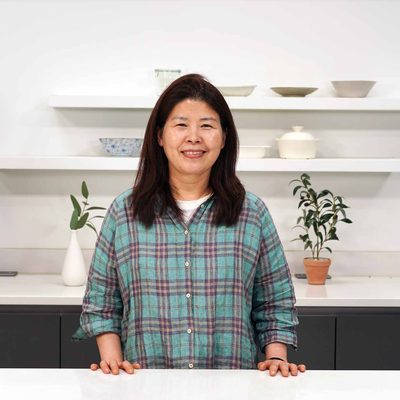
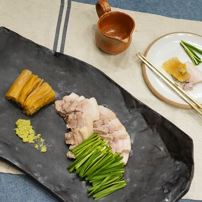
묵은지수육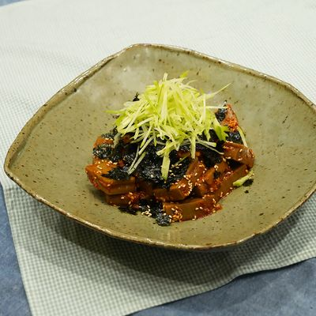
도토리김치무침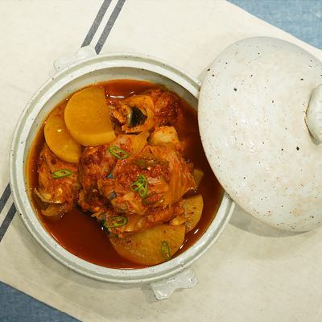
고등어김치찜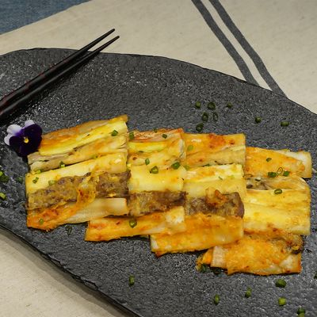
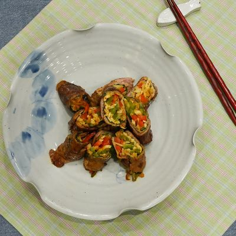
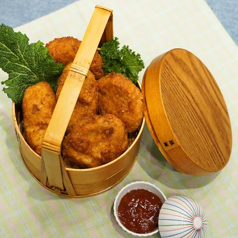
외 7편10편 보기 →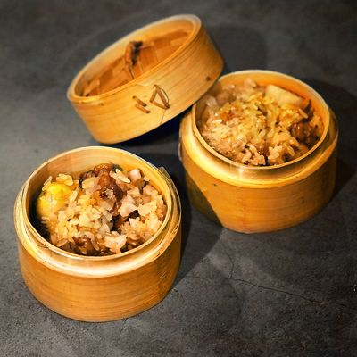
뿌리채소흰약밥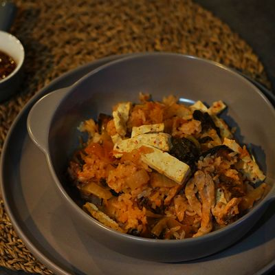
돼지고기김치밥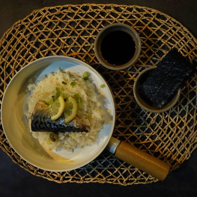
고등어 생강밥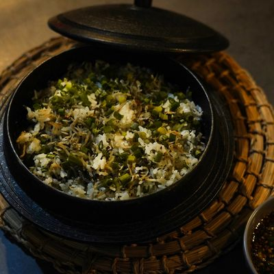
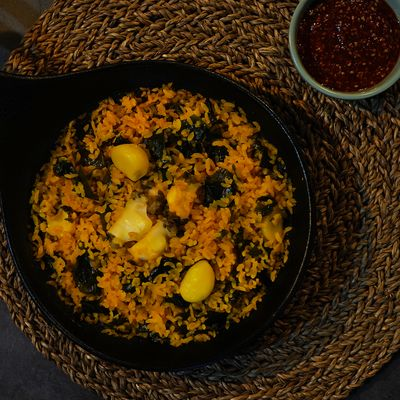
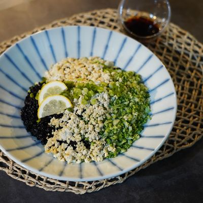
외 7편10편 보기 →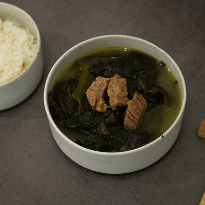
쇠고기 미역국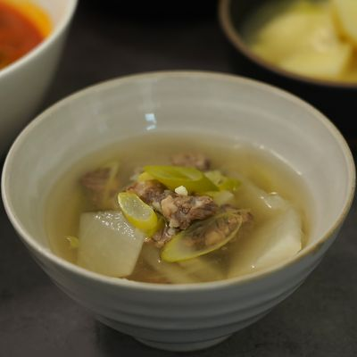
소고기뭇국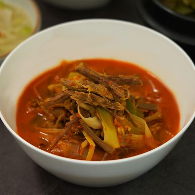
육개장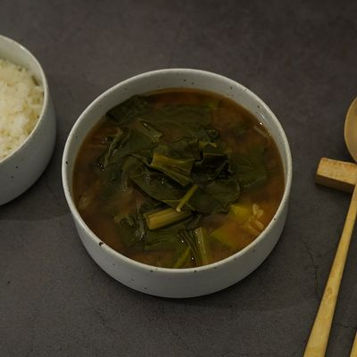
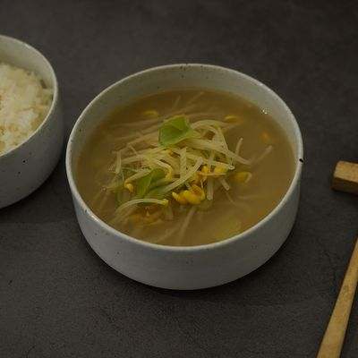
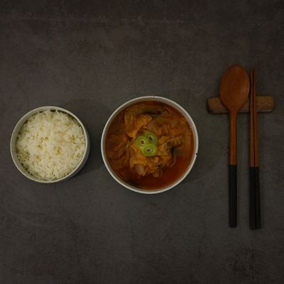
외 7편10편 보기 →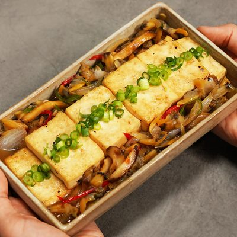
조갯살 두부조림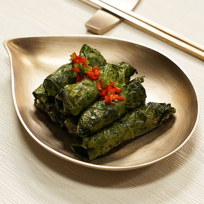
깻잎말이찜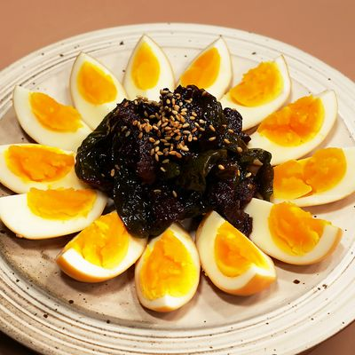
달걀 소고기 장조림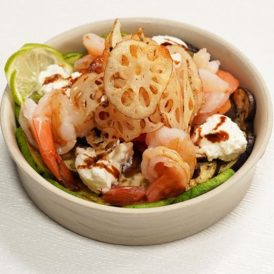
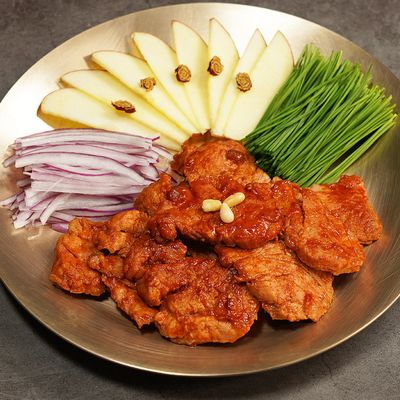
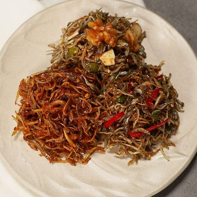
외 8편11편 보기 →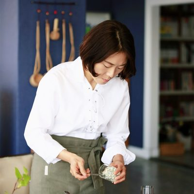
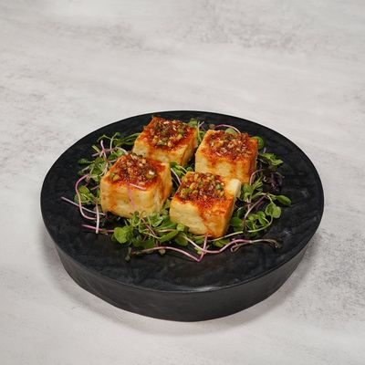
두부구이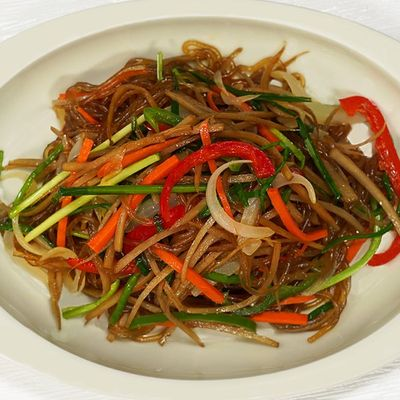
우엉잡채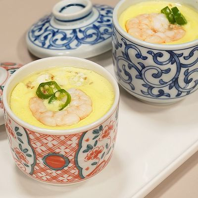
순두부 새우 달걀찜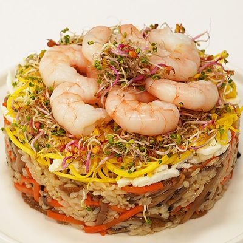
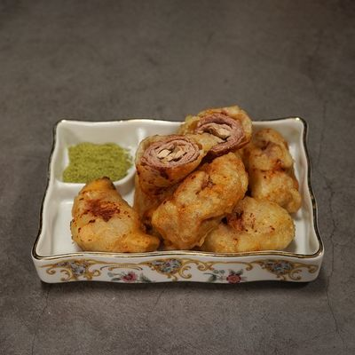
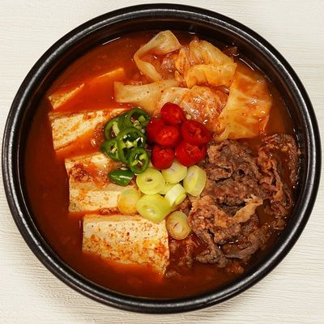
외 7편10편 보기 →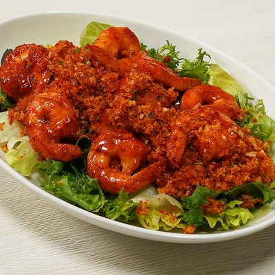
새우마요샐러드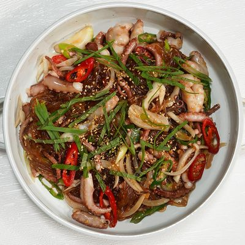
낙지당면볶음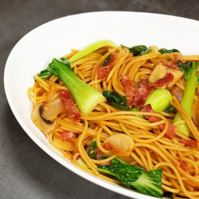
베이컨 간장 파스타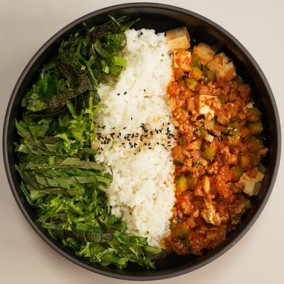
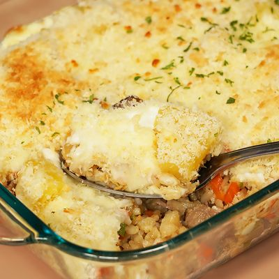
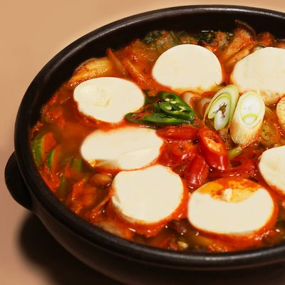
외 7편10편 보기 →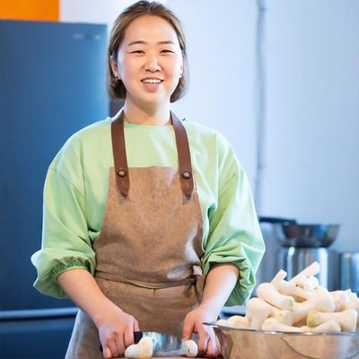
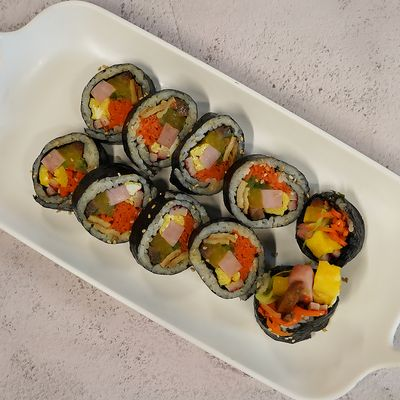
야채김밥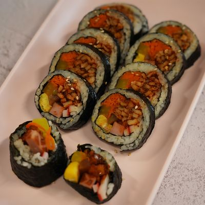
땡초김밥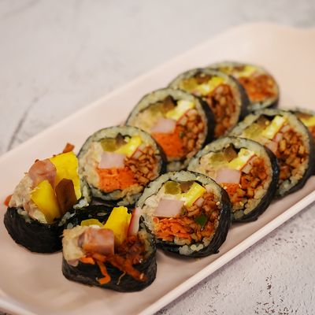
매운참치김밥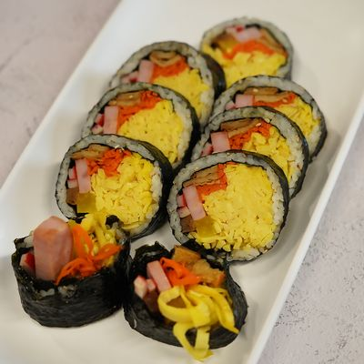
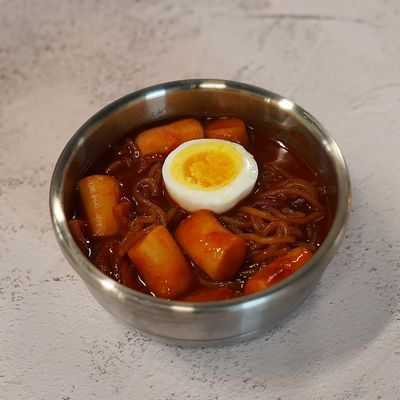
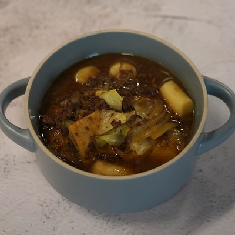
외 7편10편 보기 →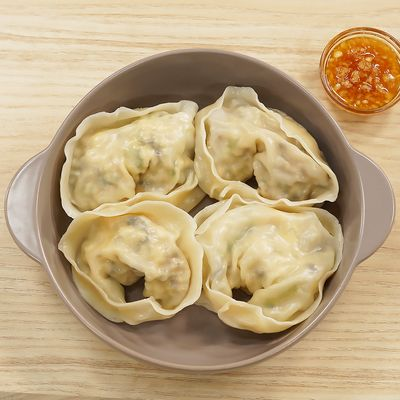
평양만두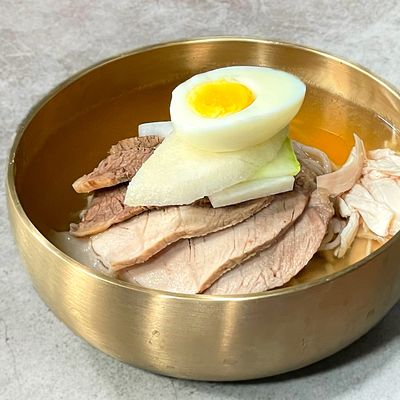
평양냉면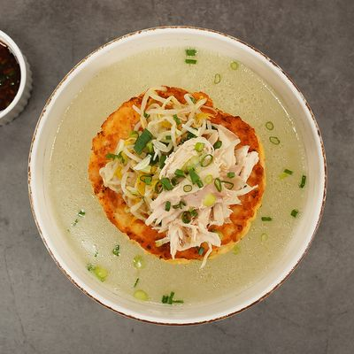
평양식 닭온반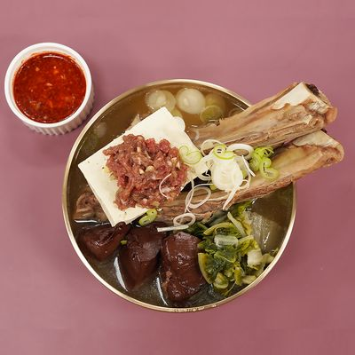
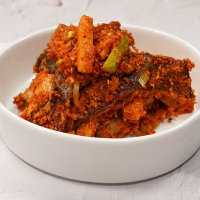
외 7편10편 보기 →매일 먹는 집밥의 기본을 직접 기획하고 촬영했습니다. 국 · 찌개 · 반찬과 파스타, 한 재료 요리, 제철 재료까지.
2분 남짓한 가로 레시피 영상 한 편마다, 따라 하다 막히기 쉬운 순간만 골라 40초 세로 팁 영상으로 나눠 붙였습니다.
레시피를 따라 하다 「어슷썰기는 어떻게 하지?」 싶을 때 바로 펼쳐 보는 기본기입니다. 레시피와 따로, 식재료별로 써는 법 · 손질법 · 보관법을 작정하고 찍었습니다.
「양파 채썰기」 한 편의 유튜브 조회수입니다. 채널에서 가장 많이 본 영상 10편 중 9편이 식재료팁입니다.
같은 구도, 같은 화질로 찍어 테마마다 섞어 써도 한 채널처럼 보입니다.
재료 · 분량 · 조리 순서가 레시피마다 같은 틀로 정리되어 있습니다.
영상과 레시피의 권리가 회사에 있어, 어디에 쓸지 회사가 정합니다.
레시피는 AI도 씁니다.
하지만 그 레시피를 직접 가르칠 선생님과
따라 할 팁 영상 2,741편은, 이미 우리에게 있습니다.